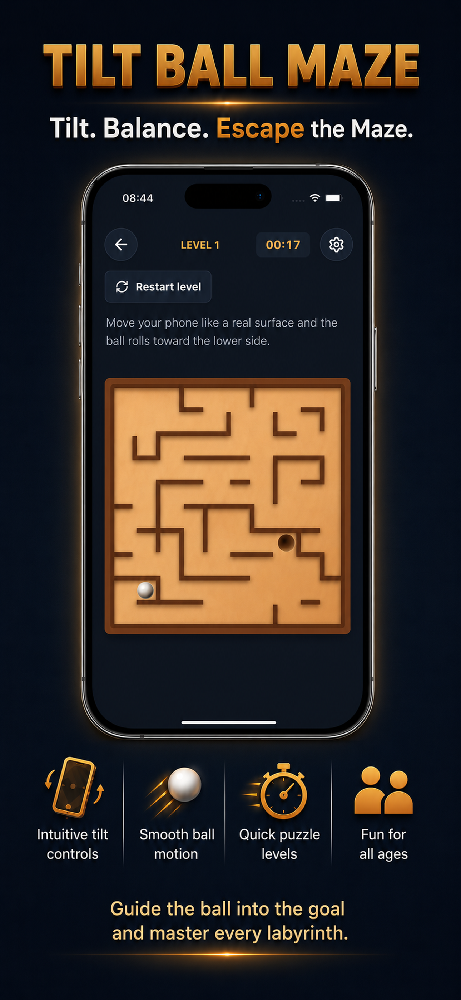

Tilt Ball Maze App
A simple and satisfying gravity puzzle game.
Guide a rolling ball through labyrinths using your phone's motion controls. Tilt carefully, keep your balance, avoid wrong turns, and roll the ball into the goal.
Master Every Labyrinth
Tilt Ball Maze is easy to understand but takes focus, timing, and control to master. Each maze gives you a clean challenge: guide the ball through the path, stay steady, and reach the hole.
Whether you enjoy maze games, marble puzzles, balance challenges, or motion-controlled games, Tilt Ball Maze gives you a relaxing but skill-based experience you can play anytime.
App Preview

Features
- Intuitive tilt controls;
- smooth ball motion;
- classic maze puzzle gameplay;
- balance-based challenges;
- clean, minimal design;
- quick levels for short play sessions;
- fun for all ages.
Relaxing Skill-Based Play
Tilt Ball Maze is built for quick, focused play sessions. Move gently, adjust your angle, and find the right rhythm as the ball rolls through each labyrinth.
Can you master every labyrinth and reach the hole?
Contact
For questions, feedback, or support, email mr.oleski.info@gmail.com.
Legal
Read the Terms and Conditions for details about using Tilt Ball Maze App.